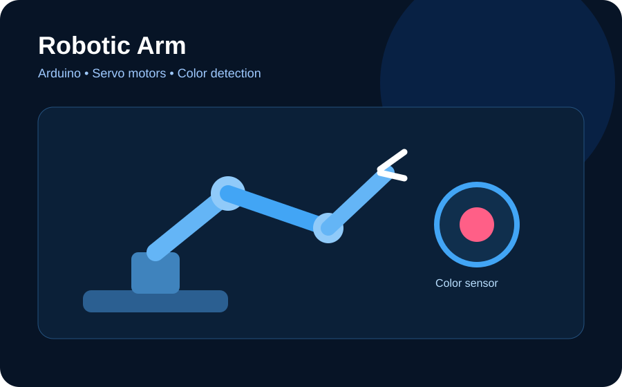
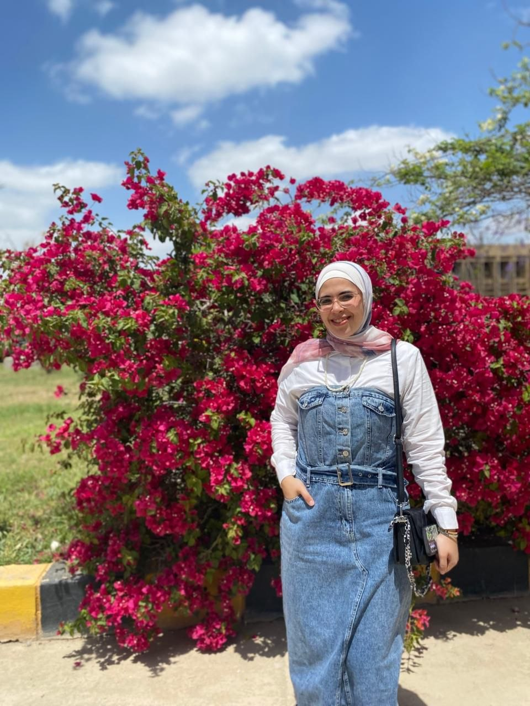
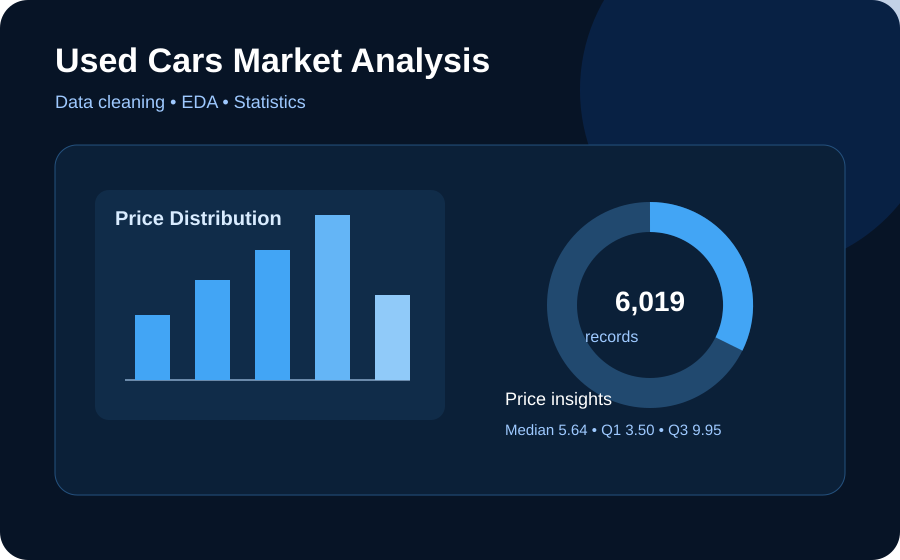
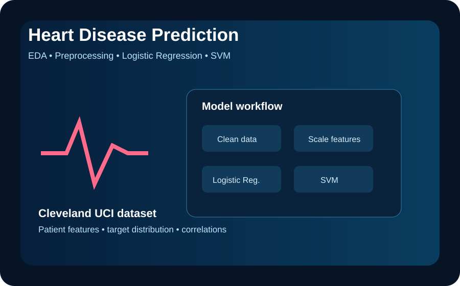
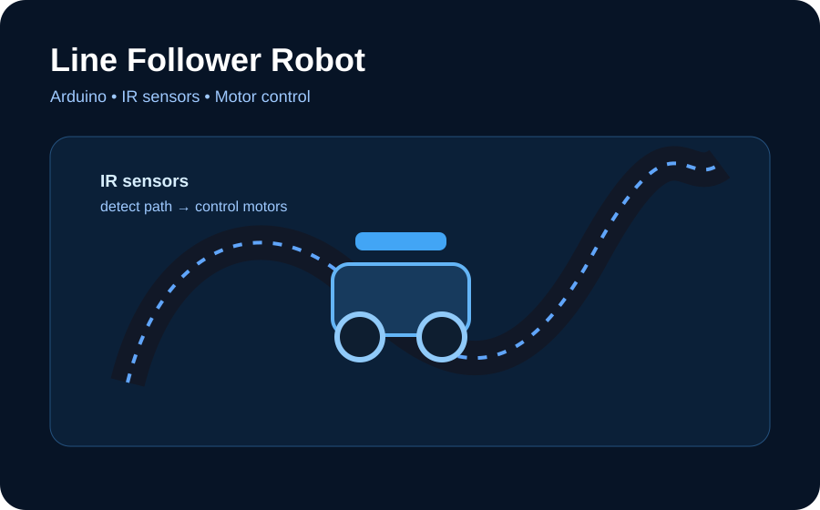

Robotic Arm
RoboticsPractical robotics work using servo motors and color detection to automate a simple pick-and-place idea.
I’m Yassmeen Eletreby, an Artificial Intelligence student at Kafr El-Sheikh University. I enjoy analyzing data, building machine learning solutions, and learning by creating practical projects.

My focus is learning through real projects and turning technical skills into clear, practical results.
I am an Artificial Intelligence student at Kafr El-Sheikh University, expected to graduate in 2028. I’m interested in Machine Learning and Data Analysis, and I enjoy exploring datasets, finding patterns, and building models that can support decisions.
I’m also developing my software skills through Flutter and keeping a strong interest in robotics and practical applications.
Programming & data work
Data cleaning & analysis
Model building & evaluation
Charts & insights
Queries & databases
Logic & robotics
Cross-platform apps
Version control
Explore my work in data analysis, machine learning, and robotics.

Practical robotics work using servo motors and color detection to automate a simple pick-and-place idea.

Analyzed 6,019 used-car records through cleaning, EDA, statistical analysis, encoding, and derived features.

Explored the Cleveland UCI heart-disease dataset and worked with preprocessing, EDA, Logistic Regression, and SVM.

An Arduino project using sensors and motor control to make a robot follow a defined path.
Understand the data and find initial patterns.
Handle missing values and inconsistencies.
Build and tune models when needed.
Measure performance with suitable metrics.
Turn results into clear recommendations.
Faculty of Artificial Intelligence · Artificial Intelligence
Building skills in Python, data analysis, preprocessing, modeling, and evaluation.
Available for internships, freelance data-analysis work, and opportunities to learn and contribute.